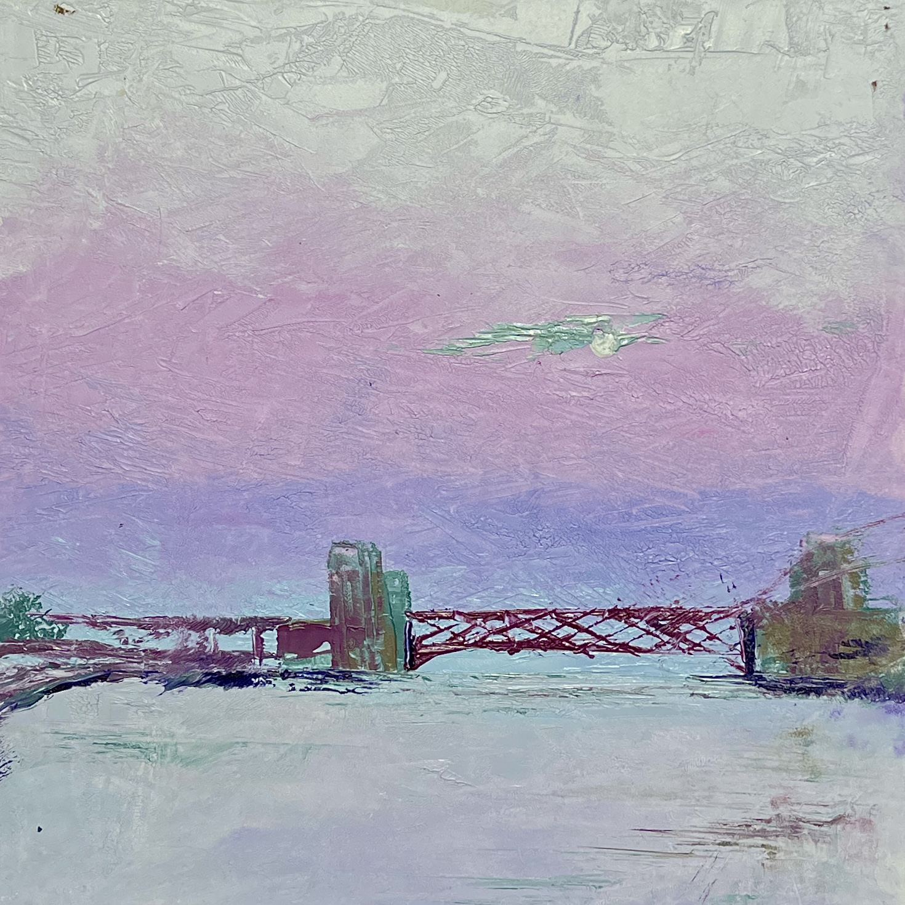

Riverwalk

Year: 2023
Medium: Oil paint on gessobord
Scale: 10 x 10 inches
I found the inspiration in the serenity and blur of boundaries where sky meets river along the riverside promenade. This creation is an endeavor to capture, much like the Impressionists, the ephemeral interplay of light and shadow at the time. The sky, with its gentle and heartwarming hues, merges seamlessly with the water, creating a continuum that defies the conventional separation of elements. In that moment, I saw, and i felt the simplistic yet profound beauty of the nature.
Homepage